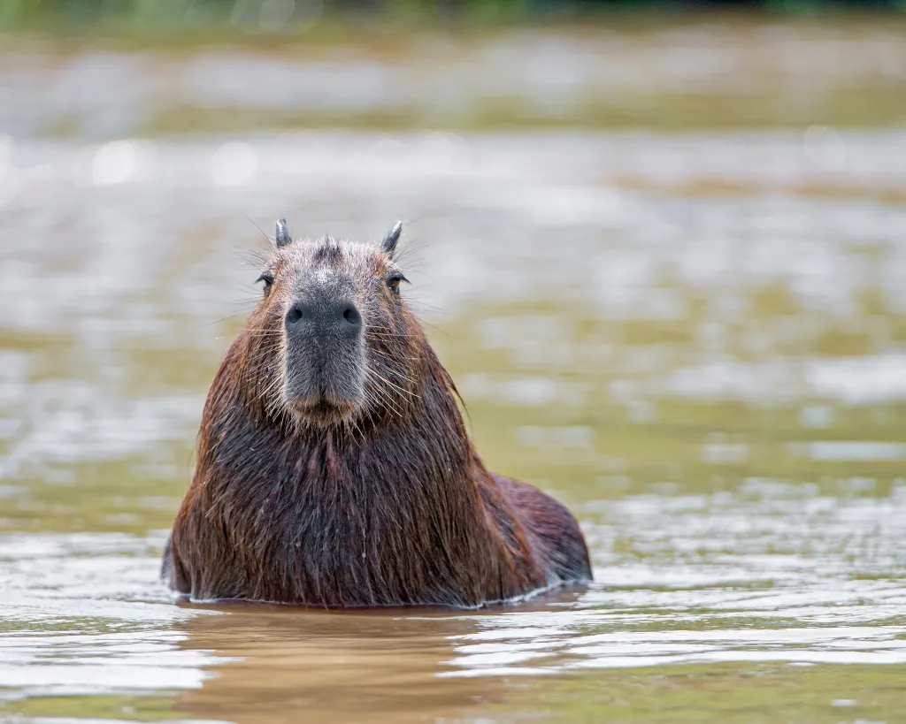

Sobre Nosotros
En Café de Capybara creemos que el café no solo es una bebida, es una experiencia. Nuestro blog nació de una idea sencilla pero poderosa: combinar el amor por el café artesanal con la calma y simpatía de los capibaras. Aquí compartimos recetas, consejos y curiosidades para que disfrutes cada taza como si estuvieras en una tarde tranquila junto al río, rodeado de buena vibra. Nuestro objetivo es crear una comunidad relajada, apasionada y curiosa, donde aprender sobre café sea tan placentero como tomarlo.
Detrás de cada entrada hay un equipo de baristas, amantes de los animales y creativos que trabajan con cariño para brindarte contenido útil y entretenido. Nos inspiran los pequeños placeres: el aroma del café recién hecho, la suavidad de una mañana lenta, y la nobleza de los capibaras. ¡Bienvenido a nuestra familia cafetera!